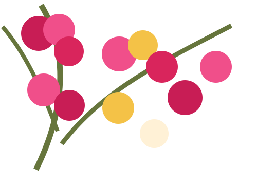

Ανακαλύψτε
✦
«Οι ιστορίες γεννιούνται εκεί όπου οι λέξεις συναντούν τη μνήμη.»
♥
Ιστορίες που αγγίζουν την καρδιά
Ιστορίες που ταξιδεύουν τον νου και την ψυχή.
Διάβασε το τελευταίο διήγημα →«Οι ιστορίες γεννιούνται εκεί όπου οι λέξεις συναντούν τη μνήμη.»
♥